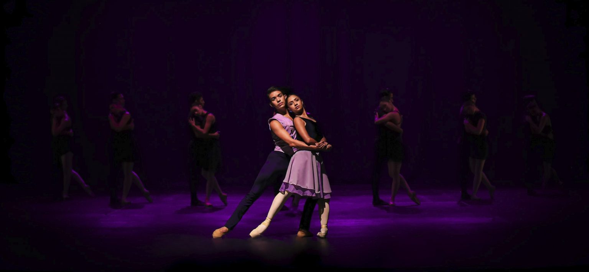

“Un concierto de Bach”
septiembre 9 @ 18:00 - 20:00
$1.00 – $3.00

Te esperamos en la tercera temporada 2023 de nuestro Ballet Nacional de El Salvador, con la dirección del coreógrafo invitado Arshak Ghalumyan (Armenia-Alemania).
La pieza tiene como principal vehículo la música de Bach y destaca la libertad de movimiento de nuestro cuerpo de danza; así mismo presenta tres piezas del repertorio permanente del Ballet Nacional.
Salvadoreños $1.00 | extranjeros residentes $2.00 | no residentes $3.00
Tienda en Línea y taquilla del teatro.
Entradas
090923 - “Un concierto de Bach” - Salvadoreños
$ 1.00
090923 - “Un concierto de Bach” - extranjeros residentes
$ 2.00
090923 - “Un concierto de Bach” - no residentes
$ 3.00